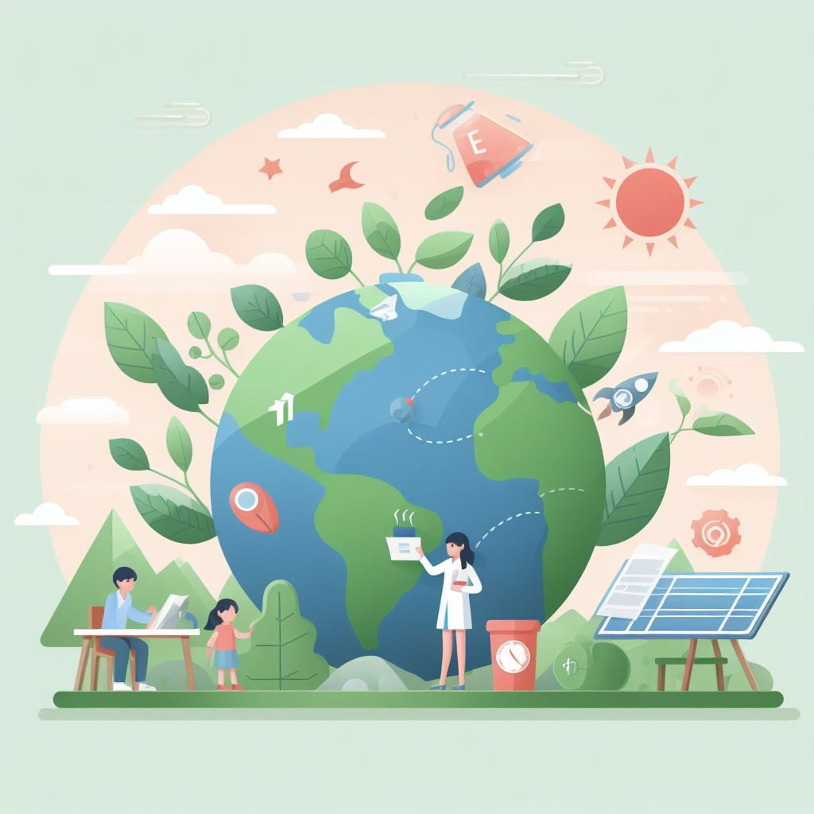

Educación Ambiental
La educación ambiental es el proceso de aprendizaje que nos ayuda a conocer y valorar el medio ambiente, y a actuar de forma responsable y sostenible para protegerlo y mejorarlo. La educación ambiental nos enseña a respetar la naturaleza, a cuidar los recursos naturales, a reducir los residuos, a reciclar, a ahorrar energía y agua, a prevenir la contaminación, a adaptarnos al cambio climático, a conservar la biodiversidad, etc.
La educación ambiental es importante porque nos forma como ciudadanos conscientes y comprometidos con el bienestar de las personas y del planeta.